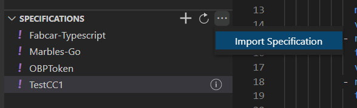
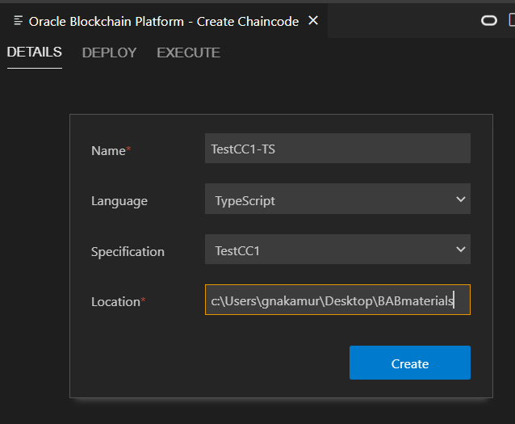
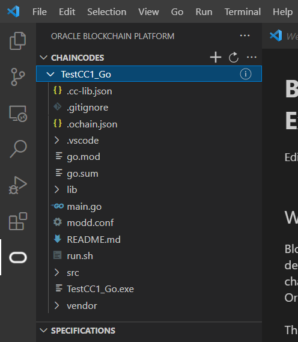
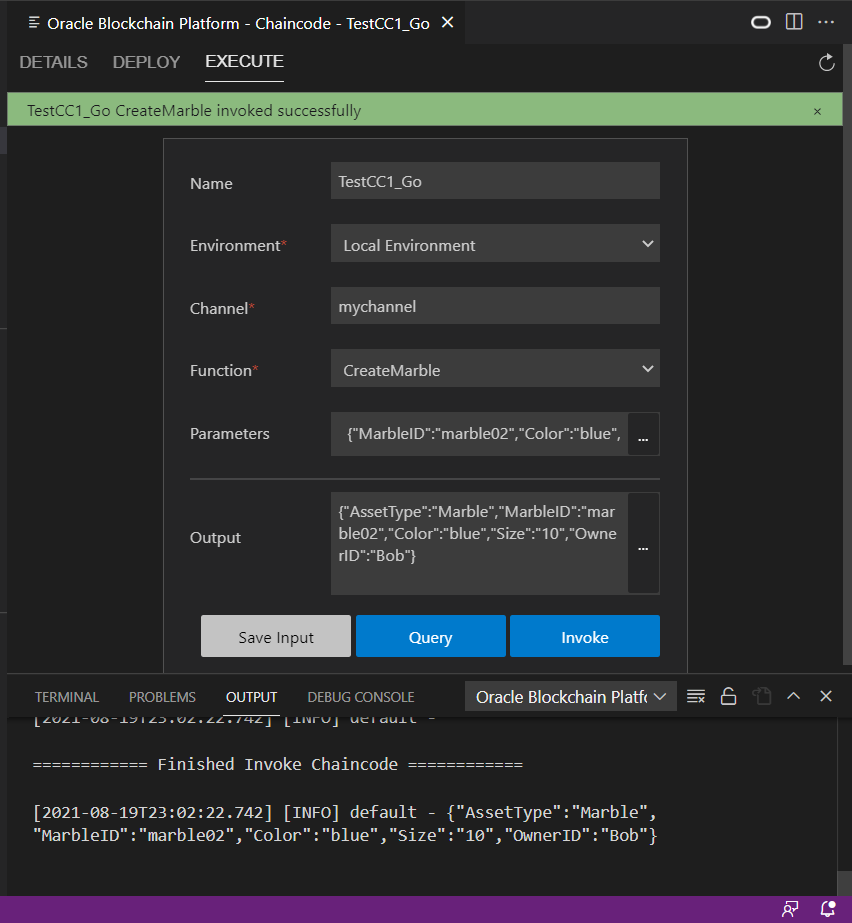

この文書は Oracle Blockchain Platform付属のChaincode開発・テスト・デプロイ補助ツールであるBlockchain App BuilderのVisual Studio Code拡張版について、ダウンロードとインストールの方法から、Chaincode仕様の作成方法やChaincodeコードの生成方法など、基本的な使い方を紹介するチュートリアルです。
この文書は、2022年11月時点での最新バージョン(22.3.2)を元に作成されています。
0. Blockchain App Builderとは
Blockchain App BuilderはOracle Blockchain Platform（OBP）に付属するChaincode開発・テスト・デプロイの補助ツールです。
BABは以下の機能を備えており、Chaincode開発を容易にし、生産性を高めます。
- YAML、JSONの形式で記述した仕様からChaincodeのコードを生成
- ローカル環境に自動構築される最小限のHyperledger Fabricネットワークを用いて開発したChaincodeをテスト
- 生成したChaincodeのパッケージングとOBPへのデプロイ
- OBP上にデプロイしたChaincodeの実行
BABは以下ふたつの形態のツールとして提供されており、いずれも同等の機能を備えています。
- コマンドラインツール
- Visual Studio Codeの拡張機能
この記事では、Visual Studio Codeの拡張版を前提に説明していきます。
1. Blockchain App Builderのインストール方法
Blockchain App Builder（Visual Studio Code拡張版）のインストールにあたっての必要な前提条件、インストーラのダウンロード方法、インストール方法について説明します。
1.1 必要な前提条件
前提条件として、以下のセットアップが必要です（なお、一部の前提条件については対応する機能を使用しない場合は無視して進めても他の機能は利用できます）。
対応OS
- Mac OS
- Oracle Enterprise Linux 7.7 or 7.8
- Windows 10 or 11
Mac OSおよびLinuxでの前提条件
- Docker: v18.09.0以降のバージョン（
docker --versionで確認） - Docker Compose: v1.23.0以降のバージョン（
docker-compose --versionで確認） - Node.js: v12.xの最新のバージョン（
node --versionで確認）
Node.js v12以外（~v11/v13~）のバージョンは利用不可 - npm: v6.x（
npm --versionで確認） - ＜GoのChaincodeを開発する場合に必要＞Go: v1.15 or v1.16（
go versionで確認） - Visual Studio Code v1.66.0以降（
code --versionで確認）
Windowsでの前提条件
- Docker Desktop for Windows: v2.x
- Node.js: v12.xの最新のバージョン（
node --versionで確認）
Node.js v12以外（~v11/v13~）のバージョンは利用不可 - npm: v6.x（
npm --versionで確認） - ＜GoのChaincodeを開発する場合に必要＞Go: v1.15 or v1.16（
go versionで確認） - Visual Studio Code v1.66.0以降（
code --versionで確認）
1.2 Blockchain App Builderインストーラのダウンロード
-
Oracle Blockchain Platformのサービス・コンソールを開きます。
-
Developer Toolsのページを開き、左側メニューからBlockchain App Builderのセクションを選択し、「Download」のコーナーからVisual Studio Code Extentionをクリックするとインストーラがダウンロードされます。

-
ダウンロードしたインストーラのZIPファイルをunzipしておきます。
1.3 Visual Studio Codeでのインストール
-
Visual Studio Codeを開きます。
-
Extentionsのページを開き、メニューボタンからInstall from VSIX…を選択します。

-
先ほどunzipしておいたインストーラから、oracle-ochain-extension-xx.x.x.vsixを選択してインストールします。
-
インストールが実行されると、Blockchain App Builderのアイコンが追加されます。

-
アイコンを選択するとBlockchain App Builderが起動されます。初回はビルドが実行されるため、数分の待ち時間が生じます。
2. Blockchain App Builderの基本的な使い方
Blockchain App Builderがインストールされ、初回のビルドが完了すると、以下のような画面が表示されます。

- メニューのCHAINCODESのセクションからは、Chaincode仕様からのChaincodeコード生成、ローカル環境あるいはリモートOBP環境へのChaincodeデプロイ、また、実行などを行えます。
- メニューのSPECIFICATIONSのセクションでは、Chaincode仕様の作成や更新などが行えます。
- メニューのENVIRONMENTSのセクションでは、ローカルのHLFネットワーク環境のリビルドや、リモートのOBP環境の登録、削除などが行えます。
SPECIFICATIONSとCHAINCODESのセクションそれぞれについて、機能と使い方を説明していきます。
2.1 Chaincode仕様関連（SPECIFICATIONSセクション）
SPECIFICATIONSセクションでは、Chaincode仕様の記述やインポートなどが行えます。また、Blockchain App Builderのインストール時にいくつかのChaincode仕様サンプルが予めインポートされています。
Chaincode仕様の作成
-
SPECIFICATIONSセクションの「＋」ボタンをクリックすると、新たに作成するChaincode仕様の詳細入力フォームが開きます。

- フォームを適切に入力し、Createをクリック。

- Name: Chaincode仕様の名前。
- Extention: 仕様の記述形式。YAML形式またはJSON形式を選択。
- Description（オプショナル）: Chaincode仕様についての説明。
- Reference File（オプショナル）: 既存のChaincode仕様をコピーして仕様を作成する場合、コピー元の仕様を指定。
- Location: Chaincode仕様ファイルが作成されるディレクトリを指定。
- Chaincode仕様が作成され、SPECIFICATIONSセクションに追加されます。作成した仕様はエディタで更新可能です。

Chaincode仕様の記述方法の詳細については公式ドキュメントを参照ください。
Chaincode仕様のその他の操作
-
SPECIFICATIONSセクションの右上の「・・・」ボタンからは、Chaincode仕様ファイルからのインポートが行えます。
 -
既存のChaincode仕様の右クリックメニューからは、生成したChaincodeコードへの再同期、仕様の複製、削除、リネームが行えます。

2.2 Chaincodeコード関連（CHAINCODESセクション）
CHAINCODESセクションでは、Chaincode仕様からのChaincodeコード（プロジェクト）生成、ローカル環境あるいはリモートOBP環境へのChaincodeデプロイ、また、実行などを行えます。
Chaincodeコードの生成
-
CHAINCODESセクションの「＋」ボタンをクリックすると、新たに生成するChaincode仕様の詳細入力フォームが開きます。

- フォームを適切に入力し、Createをクリック（↓の画像はそれぞれLanguageでTypeScript、Goを選んだ場合です）


- Name: Chaincode仕様の名前。
- Language: 生成するコードの言語。TypeScriptまたはGoを選択。
- Specification: 生成の元にするChaincode仕様を選択。
- Location（TypeScriptの場合）: 生成するChaincodeコードのプロジェクトが作成されるディレクトリを指定。
- Go Domain（Goの場合）: 生成するChaincodeのGoドメイン（パッケージ名）を指定（指定したドメインに基づいてGoのソースディレクトリ配下にプロジェクトが生成される）。指定しない場合はexample.comを使用。
- Chaincodeコード／プロジェクトが生成され、CHAINCODESセクションに追加されます。生成されたコード等はエディタで更新可能です。

Chaincodeコードのデプロイ
- 対象のChaincodeコードを選択すると、DETAILS、DEPLOY、EXECUTEのタブを備えたパネルが開きます。ここではDEPLOYタブを選択し、表示されたフォームに適切に入力します。

- Name（表示のみ）: デプロイするChaincodeコードの名前。
- Environment: 対象の環境。ローカル環境（Dockerコンテナとして自動構築される最小限のHyperledger Fabricネットワーク）と（登録してある場合には）リモートのOBP環境から選択。
- Channel: Chaincodeを稼働させるChannelを選択（ローカル環境の場合はmyChannel固定）。
- Version: Chaincodeのバージョン。
- Init Parameters（オプショナル）: Chaincodeを稼働させる際の初期パラメータ（Init関数に渡す引数）。必要な場合には指定。
-
Deployをクリックすることで、指定した環境にChaincodeがデプロイ（インスタンス化され稼働）されます。
- Chaincodeのデプロイが成功すると、成功メッセージが表示されます。

なお、ローカル環境へのデプロイ、かつ、ローカル環境のDockerコンテナが既に起動されていなかった場合には、この時に併せてDockerコンテナが起動されます。
Chaincodeコードの実行
- 対象のChaincodeコードを選択し、EXECUTEタブを選択すると実行フォームが開きます。フォームに適切に入力します。

- Name（表示のみ）: デプロイするChaincodeコードの名前。
- Environment: 実行するChaincodeが稼働している環境。ローカル環境とリモートのOBP環境から選択。
- Channel: 実行するChaincodeが稼働しているChannelを選択（ローカル環境の場合はmyChannel固定）。
- Function: 実行するChaincodeの関数をコードから抽出されたリストから選択。
- Parameters: 関数に渡す引数。
Parametersについては、**「…」 ** ボタンをクリックすると、コードから抽出された以下のような引数入力補助フォームが開きます。

- フォーム入力後、Save Input、Query、Invokeボタンでそれぞれ以下のアクションの実行が可能です。
- Save Input: フォームの入力値をファイルに保存します。保存した入力値は後で再利用できます（後述）。
- Query: PeerにChaincodeの実行を依頼（Transaction Proposal）します。が、OrdererにTransactionを送付しないため、トランザクション内容は台帳には反映されません。
- Invoke: PeerにChaincodeの実行を依頼（Transaction Proposal）し、OrdererにTransactionを送付します。トランザクションが成功した場合、台帳に反映されます。
- QueryあるいはInvokeを実行すると、コンソールに実行ログが出力されます。また、Transaction Proposalが成功した場合には、フォームのOutput欄に関数の返り値が表示されます。以下はInvokeを実行し、トランザクションが成功した場合の表示例です。

[注意]
ローカル環境でChaincodeをデプロイ、実行している場合、デプロイ状況や台帳の値などの保持サイクルはローカル環境のDockerコンテナの稼働期間限りです。Dockerコンテナを停止した場合は、デプロイからやり直す必要があります。
Chaincodeコードのその他の操作
-
CHAINCODESセクションの右上の「・・・」ボタンからは、既存のBlockchain App Builderで生成したChaincodeコードプロジェクトからのインポートが行えます。

-
既存のChaincodeコードの右クリックメニューからは、生成したChaincodeコードのパッケージング、ライブラリのアップデート、削除、別ウィンドウでの表示が行えます。

-
Chaincodeコードに”Save Input”で保存したChaincode実行フォームの入力値がある場合は、Queries配下から保存された入力値を表示できます。保存された入力値を選び、右クリックからOpen for Executionを選択すると、保存された入力値を反映した状態でChaincode実行フォームが開きます。